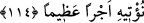

değildir. Bilakis o kimseler bütün iyilikleri yaparlar ama ona bir değer vermezler.
Çünkü o amellere ulaşmanın Allah Teâlâ’nın fazlıyla olduğunu bilirler.
Sa’dî şöyle der:
Allah’tan hayır için bir lütuf ulaşırsa ancak,
Kuldan bir başkasına hayır ulaşır
Hizmete yönelmek istersen
Allah’a hamd et, ve yaptığın hizmeti görme
Âyetin işârî tefsiri şöyledir: Allah’ın fazlı, ihsanlarından bir ihsandır. Onu dilediğine
verir. Hiç kimsenin o ihsanı kesb ve celbetmesi mümkün değildir. Allah bu lütfu
sayesinde kulu îmâna hidâyet eder ve salih amele muvaffak kılar. “Allah’ın lütfu sana
gerçekten büyük olmuştur” âyetindeki “Azîm”, yâni büyük Allah Teâlâ’dır. Yâni, sen
(ey Peygamber) âlemlere Allah’ın lütfu ve rahmeti olduğun gibi Azamet sâhibi olan
Allah da senin için bir ihsan ve rahmettir. Bu sebeple Allah Teâlâ “Sen olmasaydın
alemleri yaratmazdım.”[147] buyurmuştur. Allah’ın peygamberine olan ihsânı sebebiyle
rûhânî ve cismânî hiç bir şey onu vuslat yolundan saptıramamıştır.
Allah’ım! Sana vuslat yolunda âfâkî ve enfüsî mânilerden bizi koru ve ihsânınla kudsî
nefislerin arasına kat.
114- Onların fısıldaşmalarının bir çoğunda hayır yoktur. Ancak bir sadaka yâhut
bir iyilik yâhut da insanların arasını düzeltmeyi emreden (in fısıldaşması)
müstesnâ. Kim Allah’ın rızâsını elde etmek için bunu yaparsa, biz ona yakında
büyük bir mükâfât vereceğiz.
“Onların” yâni insanların “fısıldaşmalarının çoğunda hayır yoktur.” “Necvâ”
lügatte iki kişi arasındaki gizli konuşmadır. Zeccâc’a göre “necvâ” bir topluluğun veyâ
iki kişinin açık veyâ gizli olarak başbaşa konuşmalarıdır. Mücâhid, bu âyetin, her ne
kadar hırsızın kavminin, hırsızı kurtarmak için kendi aralarında gizlice konuşmaları
hakkında inmiş olsa bile hükmünün bütün insanlar hakkında umûmî olduğunu
söylemiştir.
“Ancak bir sadaka yâhut bir iyilik yâhut da insanların arasını düzeltmeyi emreden
(in fısıldaşması) müstesnâ”
“Ma’rûf, yâni iyilik şerîatın güzel gördüğü ve aklın da inkar etmediği şeydir. Ma’rûf
bütün güzellik çeşitlerini ve iyi amelleri içine alır. Âyetteki sadakadan maksat zekât ise